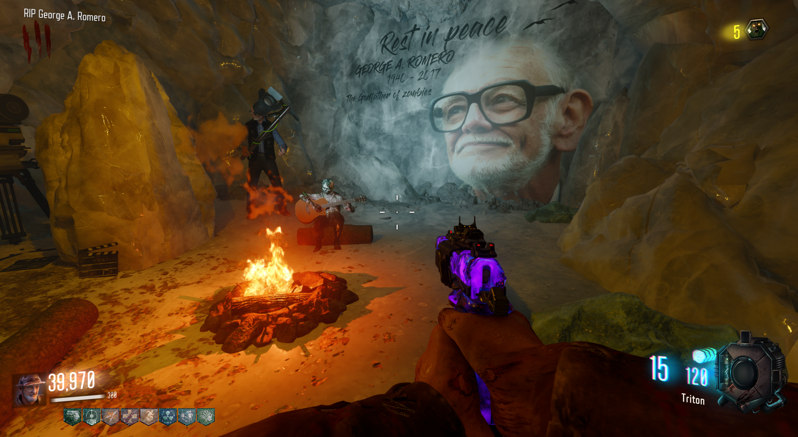
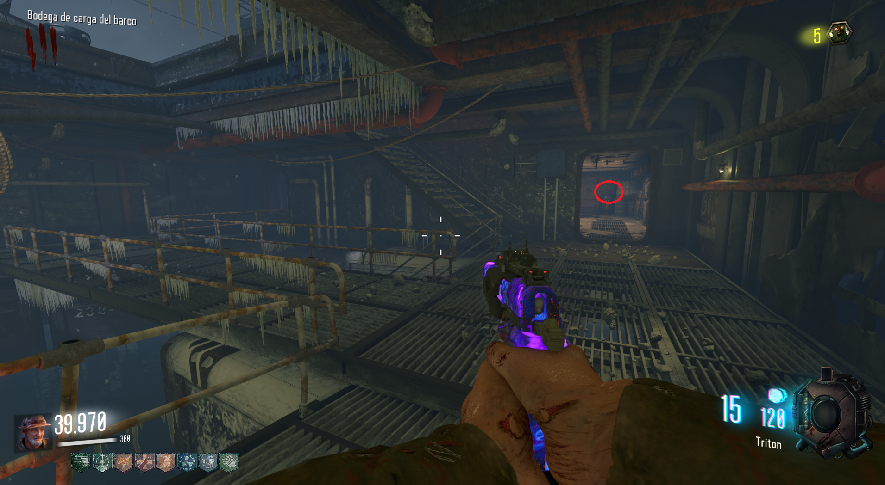
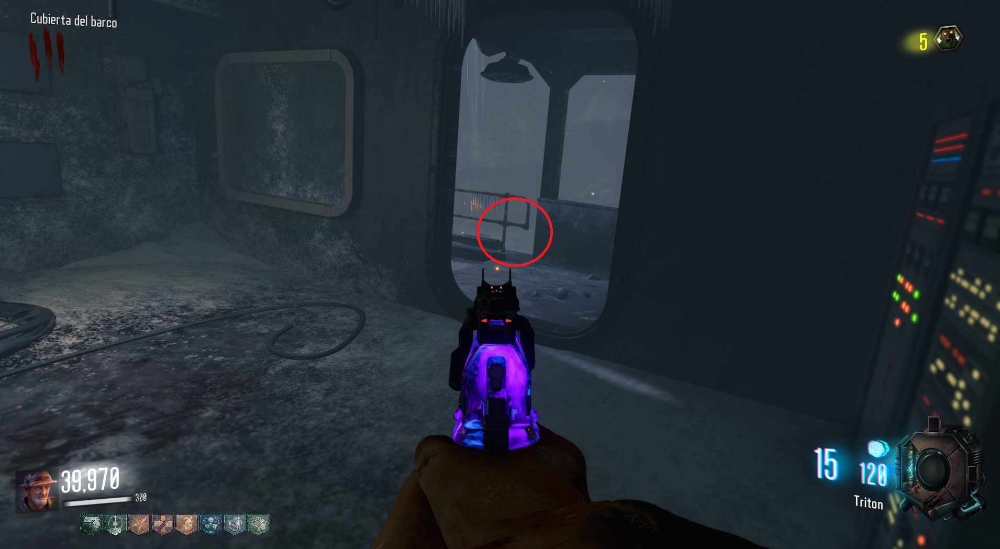
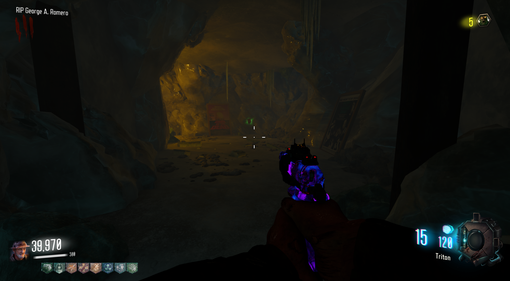

Canción 1 (Call of the Dead)

Reproducir canción
Para ir a la isla de George Romero, primero deberemos de obtener un objeto que se encuentra bajo la cubierta del barco.

Después tendremos que dejarlo en la tubería bajo el cuarto de electricidad.

Si nos situamos ahora a la izquierda del objetos, seremos lanzados a la isla.

Aquí podremos obtener el Max Ammo y escuchar la canción.
